|
Physics Laboratory |

|
Excel Tutorial 7 |
|
6. Trigonometry E |
Graphing Data and Curve Fitting |
8. Advanced Graphing F |
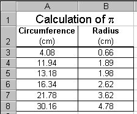
In this tutorial on graphing, we will examine data taken from an experiment in which the circumferences and radii of several circular objects were measured. The data is displayed in the screen shot to the right. For more information on formatting the data and displaying the text see the previous tutorials.Of course, the equation associated with this data is C = 2pr, or the circumference of a circle is equal to two times pi times the circle's radius. In this experiment, the circumferences and radii are measured. We hope to be able to determine the value for p, which, to six significant figures, is given as 3.14159.
It is my firm belief (although not necessarily the belief of all at this University) that beginning laboratory students should plot their data by hand rather than use a computer application to perform this task. However, at this time, some of our lab courses permit computer graphing. Here we show how to use Excel to plot the data. To do so, follow the steps below. It may appear that this is a difficult process, but it is rather straightforward and simple.
- Enter the data onto the worksheet as shown in the above
screen shot.
- Click on an empty cell within the worksheet and then click
the Chart Wizard button, , from
the toolbar.
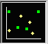
- A Chart Type window (Step 1 of 4) will open.
Choose the XY (Scatter)
option, .
Do not select a sub-type which connects data
points with lines or smooth curves. Press the Next > button.

- A Chart Source Data window (Step 2 of 4) will open.
Click on the
Series tab near the top of the window.
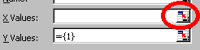
- Then click on the Add button,
. This will cause
value boxes, like the ones displayed here, to appear.
Next click on the Collapse Dialog button,
, at the right end
of the X Values box. This will
temporally shrink the dialog window
so you can highlight the x-values that you wish plotted on the
horizontal axis.
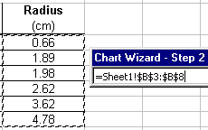
- When the dialog window shrinks, you can use the mouse to
highlight the x-values that will be plotted along the horizontal
axis. Note that when the cells are selected, their reference
appears in the X-Values box. When finished click the
Expand Dialog button
which will return the dialog window
to maximum size.
- Click on the Collapse Dialog button,
, at the right end
of the Y Values box and
repeat the procedure in Step 7 for the y-values which
will be plotted on the vertical axis.
- A preview of the plot should be displayed in the window. Click
the Next > button.
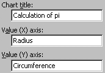
- A new Chart Options window (Step 3 of 4)
will open. Here you can add a title
and axis headings to the graph. It is important that you do not
skip this step, so spend a few seconds to fill in these
text boxes with descriptive titles.
When you are finished, click the Next > button.
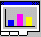
- A new Chart Location window (Step 4 of 4) will open. Here
you can decide where your graph will be located. If you want
the graph to appear on its own page, select the "As new
sheet" option:
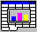
If you want the graph to appear on the same page as your data, select the "As object in Sheet1" option: - After clicking the Finish button, the graph will appear either
on the same page as the data (as shown below), or as a new sheet.
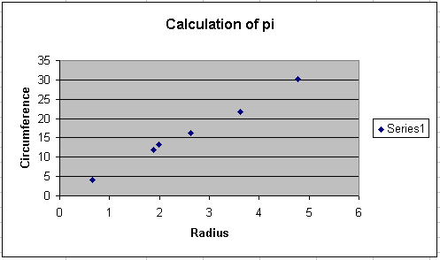
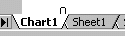
If you decide to print the graph as a new sheet and wish to return to the data sheet, click on the Sheet 1 tab at the bottom of the spread sheet.
Once the graph has been created, take a minute or two to make put the finishing touches on it.
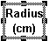
 For instance, you should always place units under your
axis headings. To do this, simply click on the heading, place the
cursor at the end of the heading, hit the <ENTER> key and
type the units in parentheses.
For instance, you should always place units under your
axis headings. To do this, simply click on the heading, place the
cursor at the end of the heading, hit the <ENTER> key and
type the units in parentheses.
 I always delete the legend box. With just one set of data on the
graph, the legend is not useful. To delete it, simply click on it
and press the <DELETE> key.
I always delete the legend box. With just one set of data on the
graph, the legend is not useful. To delete it, simply click on it
and press the <DELETE> key.
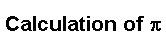
 It is attractive to add appropriate symbols
in the title. For instance
with our graph, I will change the "pi" in our title to
"p". For a reminder of how this is done,
see the Displaying Symbols tutorial.
It is attractive to add appropriate symbols
in the title. For instance
with our graph, I will change the "pi" in our title to
"p". For a reminder of how this is done,
see the Displaying Symbols tutorial.Note that it is also possible to change the font style and size of the titles and headings.
 You should always add a trendline to the graph. That is,
make the computer draw the best-fit line to the data. You should also
display the equation and the R-squared value on the graph.
You should always add a trendline to the graph. That is,
make the computer draw the best-fit line to the data. You should also
display the equation and the R-squared value on the graph.
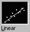
Since the relationship between the circumference and the radius is linear, we can expect the plotted data to form a straight line in the form of y = mx + b. To add the trend line, click anywhere on the graph and then click on Chart >> Add Trendline from the menu bar. Since we expect the fit to be linear, select linear fit.
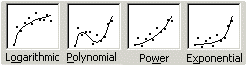
It is possible with Excel to add trendlines other than linear ones. For example, you may choose logarithmic, exponential, polynominal, power series, or a moving average, depending on the trend(s) displayed by the data.It is also possible with Excel to add multiple trendlines to one set of data. For information on that technique see my tutorial on fitting multiple curves on one set of data.
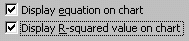
To display the equation and R-squared value on the graph, click on the Options tab. Then place check marks in the appropriate boxes.
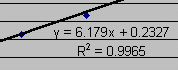
When the OK button is pressed the best fit line is drawn and the equation of the line and R-squared value will be displayed on the graph. It will look something like the screen shot to the right. You may move the equation by clicking and dragging it to the desired location.The R-squared value is actually the square of the correlation coefficient. The correlation coefficient, R, gives us a measure of the reliability of the linear relationship between the x and y values. A value of R = 1 indicates an exact linear relationship between x and y. Values of R close to 1 indicate excellent linear reliability. If the correlation coefficient is relatively far away from 1, the predictions based on the linear relationship, y = mx + b, will be less reliable. For more information about this topic, see the linear regression tutorial.
 You should find it odd that the equation displayed on the graph is
y = 6.179x + 0.2327. After all, we did not measure
You should find it odd that the equation displayed on the graph is
y = 6.179x + 0.2327. After all, we did not measure
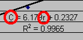
y's and x's, but rather we measured circumferences (C's) and radii (r's). You should always change the displayed equation to match your measured variables! To change the equation, simply click on the equation and change the variables. The screen shot to the right shows how we made our equation more representative of the experiment. Recall that the governing equation of this experiment is C = 2pr.By doing this step, you are in essence telling your TA that you really do understand what was actually measured and how well the experiment matched the theory.
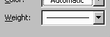
 A nice touch to your graph is to decrease the thickness of the
best-fit line. The default size is rather thick and often hides the
actual data points. To make the line thinner, double-click
on the trendline and then change its weight to a thinner line.
A nice touch to your graph is to decrease the thickness of the
best-fit line. The default size is rather thick and often hides the
actual data points. To make the line thinner, double-click
on the trendline and then change its weight to a thinner line.
The final result of your efforts is a graph that looks something like the following:
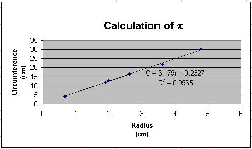
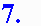
Simply making the graph is not all that is required of the physics student. The real job of the physics student is to determine what physics principles (if any) were verified by the laboratory experiment. You must constantly ask yourself: "What physics principle was this experiment designed to show?" and "Did the experiment actually verify the theory?"In this example experiment, we hoped to show that if we plotted the circumferences of several circles versus their radii, the slope of the resulting graph should equal 2p. We have a very nice graph, but we have not determined if the experiment actually verified the formula C = 2pr!
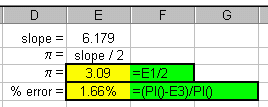
You should expect by now that we can use Excel to compare the experimental slope to the theoretical slope. Another way of stating this is what is our experimental value of p? The screen shot to the right shows how we used Excel to do this. Our slope was determined to be 6.179. (No units, right?!) The theoretical value of the slope is equal to 2p, or p = slope/2.The formula in cell E3 (=E1/2) gives the experimental value of p to be 3.09. The formula in cell E4 gives the percent error between the actual and experimental values. As you can see, an error of only 1.66% indicates that the student performed this lab very carefully!
Note that in our percent error formula (cell E4 above) we did not explicitly multiply the result by 100%. Instead, we simply calculated the fraction and then clicked on the Percent Style button,
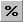
.So here is what the finished worksheet might look like:
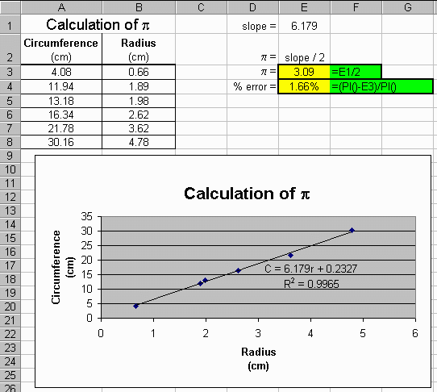
Once again, ask your TA if your graphs should be on separate pages or included with the data table as shown above.
Once again, make sure that when you print your worksheet you print the gridlines and row and column headings. Review how to do this by visiting the Basic Actions tutorial, section 9.
If your worksheets look like this one, you are guaranteed an A for the course!
If you have a question or comment, send an e-mail to
.
|
6. Trigonometry E |

|
8. Advanced Graphing F |
Copyright © 2000, Clemson University. All Rights Reserved.
This page was created by
.